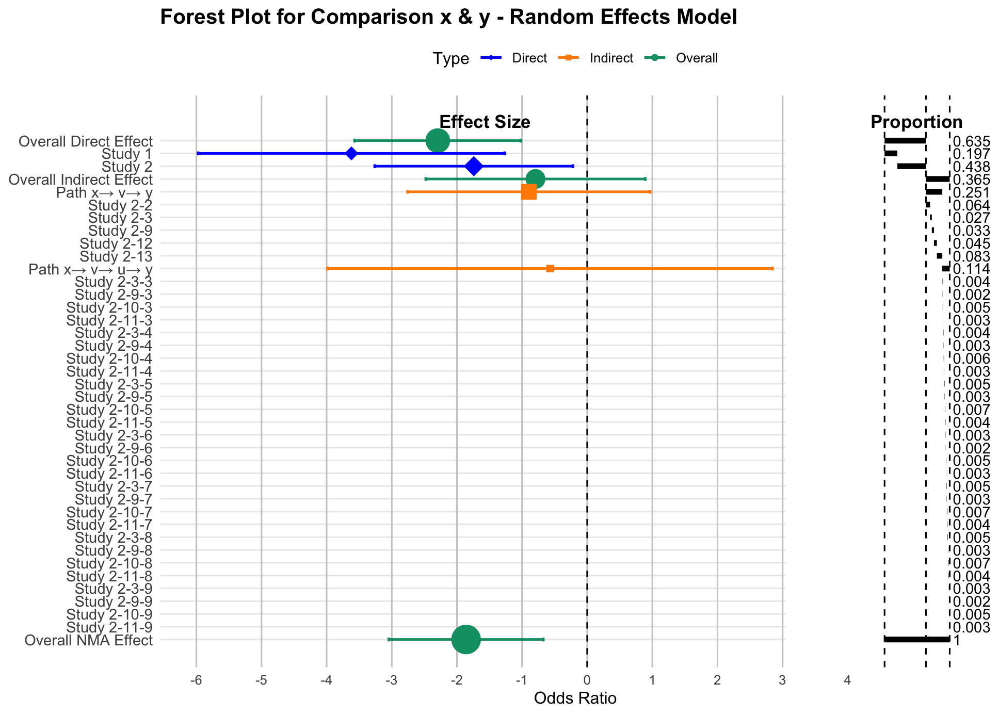
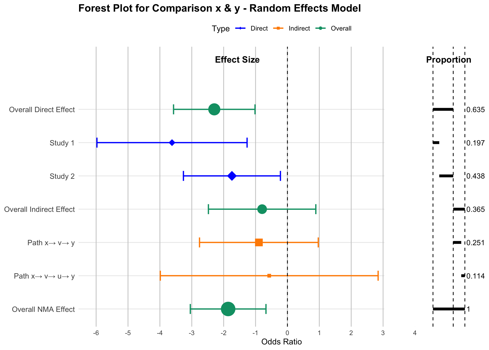
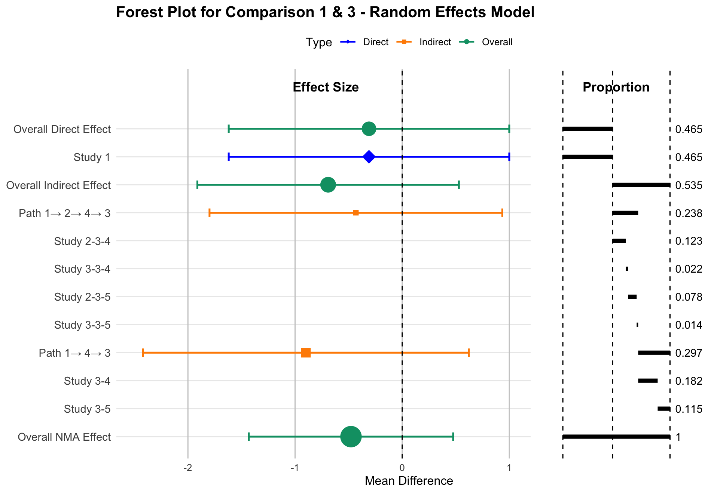
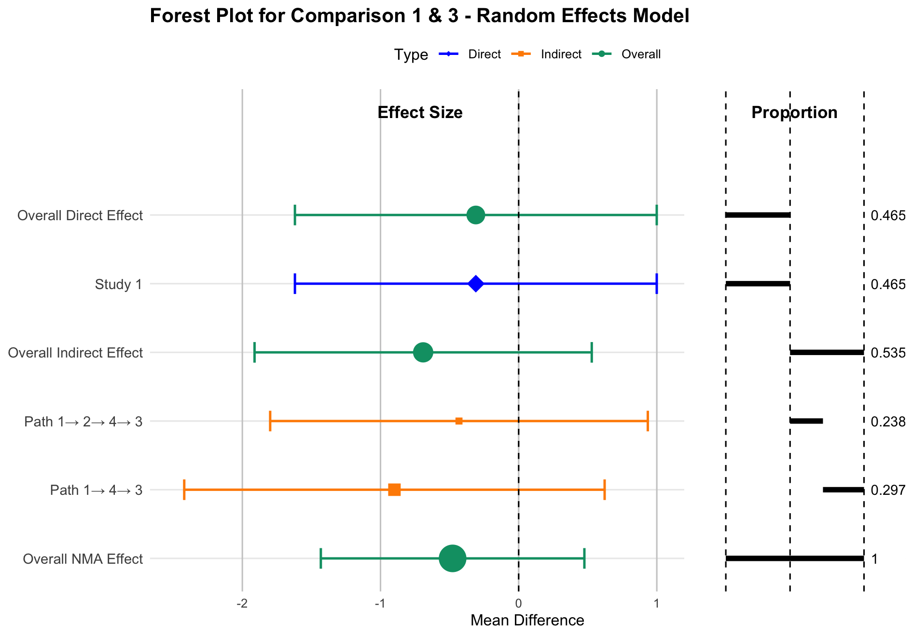

We present NMAforest, an R package designed to visualize results from network meta-analysis (NMA) by producing forest plots that explicitly decompose and visualize the contributions of direct and indirect evidence to treatment effect sizes. While existing packages provide tools to summarize treatment effect estimates and confidence intervals in NMA, they typically do not attribute how much each study, comparison, or path contributes to these results. NMAforest addresses this limitation by integrating effect estimation summaries with the treatment network’s structural information and the Hat matrix, enabling a transparent decomposition of evidence flows. The package computes effect estimates for direct comparisons, indirect routes through specific network paths, and the overall NMA estimate, accompanied by 95% confidence intervals. The forest plot enables visualization of the relative contribution of each evidence component using proportion bars aligned with the estimates, facilitating a clearer interpretation of the strength and source of evidence.
Network meta-analysis (NMA) extends pairwise meta-analysis by allowing simultaneous comparisons among multiple treatments, even in the absence of head-to-head comparisons. This framework has become essential in comparative effectiveness research across disciplines such as clinical medicine, epidemiology, and public health, where evidence networks are often sparse or partially connected.
While NMA enables indirect estimations and an approach to combining direct and indirect evidence, it also introduces substantial complexity in interpreting how treatment effect estimates are derived. Specifically, each estimate typically combines direct evidence from studies that directly compared the treatments and indirect evidence accumulated via intermediate comparisons across the network. Understanding this composition is crucial for evaluating the robustness of conclusions, detecting influential studies or comparisons, and assessing the consistency between direct and indirect evidence.
One approach to quantifying evidence contribution is the projection matrix (commonly referred to as the Hat matrix), which arises from the linear model formulation of NMA introduced by Lu et al. (2011). This approach formalizes the combination of evidence and enables estimation of both treatment effects and their associated uncertainty. Building upon this, König et al. (2013) demonstrated how the Hat matrix can be interpreted in terms of evidence flow, assigning proportions of each treatment effect estimate to different direct comparisons. More recently, Papakonstantinou et al. (2018) extended this interpretation by introducing the concept of evidence streams: directed paths through the treatment network that quantify how evidence propagates indirectly between treatments. Their algorithms use flow decomposition to allocate contributions from direct comparisons across all paths in a way that is consistent with the underlying model assumptions.
Despite this theoretical progress, practical tools for decomposing and
visualizing evidence contributions remain limited. For example, the
popular netmeta R package (Rücker et al. 2023) implements frequentist
NMA and computes Hat matrices but does not provide built-in methods to
enumerate evidence paths or produce contribution-aware forest plots.
General-purpose visualization tools, such as the R package
forestplot (Gordon
2023), are designed only for plotting and do not perform statistical
calculations or differentiate between sources or relative contributions
of evidence. This lack of transparency can limit interpretability and
hinder effective communication of NMA results to stakeholders.
To address these challenges, we introduce the NMAforest package, which integrates statistical estimates, evidence flow decomposition, and contribution visualization in a unified workflow. By combining network structure and Hat matrix-based proportions with standard forest plot representations, NMAforest enables researchers to generate richly annotated plots that clearly delineate the origins of each estimate and the influence of each study and path within the network. The NMAforest package is available from CRAN at https://CRAN.R-project.org/package=NMAforest.
The motivation for developing NMAforest stems from the practical challenges faced by researchers and decision-makers who need to interpret and communicate NMA results. Pairwise meta-analysis and corresponding forest plots are effective for presenting treatment effect estimates and their uncertainty. Pairwise meta-analysis and forest plots also provide the weight that individual studies provide to treatment effect estimates. However, NMA is limited in the detail it conveys about where the evidence comes from. In practice, this often leads to questions such as: How much of the estimated effect relies on direct comparisons? Which indirect paths contribute the most information? Could the result be dominated by a small subset of studies?
These questions are particularly important in applications where evidence transparency and reproducibility are critical. For example, health technology assessments, guideline development, and policy decisions often require a clear audit trail showing how each piece of evidence informs the final estimate. While the Hat matrix and evidence stream decomposition methods provide a rigorous statistical basis for such attribution, extracting and interpreting these contributions typically requires multiple manual steps and specialized code.
NMAforest was
designed to fill this gap by offering an integrated set of tools that
connect statistical estimation with intuitive visualization. The package
builds directly upon the outputs of netmeta, leveraging its estimates
and Hat matrix computations to break down treatment comparisons into
three main components: direct estimates derived from head-to-head
studies, indirect estimates based on evidence propagating through
specific paths in the network, and the overall NMA estimate that
combines all available evidence.
Beyond estimating and displaying these components, NMAforest provides a structured approach to display them graphically. In each forest plot, the effect size estimates for the direct, indirect, and NMA components are aligned with horizontal bars that represent the relative contribution of each evidence path. This combination of quantitative and visual decomposition improves transparency, facilitates critical appraisal, and supports sensitivity analyses by making the influence of each evidence path explicit.
In this way, the package aims to make advanced evidence attribution methods accessible to a broader audience and to support a more informed interpretation of complex NMA results.
The main function provided by the package is:
NMAforest(): Creates a forest plot that decomposes evidence
contributions for a specified treatment comparison. The function also
returns a structured statistical output containing study labels,
treatment effect estimates for direct, indirect, and NMA comparisons,
together with their standard errors, confidence intervals, and
relative weights. Importantly, the output also includes proportion
values that attribute contributions across overall estimates, paths,
and individual studies.This function supports the following arguments:
data- A data frame in long format containing the input data. Required
columns include study (study label), t (treatment), and
appropriate outcome data:
For binary outcomes: r (events) and N (sample size)
For continuous outcomes: y (mean), sd (standard deviation),
and N (sample size)
sm- Summary measure for the treatment effect. Supported values
include "OR" (odds ratio), "RR" (risk ratio), "MD" (mean
difference), and "SMD" (standardized mean difference), etc.
reference- The reference treatment against which others are compared.
model- Type of NMA model to use. The options are "random" or
"fixed".
comparison- A character vector of length two, indicating the pair of treatments to be compared.
study- Column name identifying the study label.
treat- Column name for treatment assignment.
event- Column name for event counts (used for binary outcomes).
N- Column name for total sample size (used for binary outcomes and continuous outcomes).
mean- Column name for mean values (used for continuous outcomes).
sd- Column name for standard deviations (used for continuous outcomes).
study_id- Column name used to uniquely identify each study arm (default =
"study_id"). If the column is not present in the original
dataset, the updated data frame will be returned with this column
added.
study_path- Logical argument. If TRUE, the function decomposes indirect
path contributions further into study-level components. If FALSE,
only the overall indirect effect and its individual paths are shown,
without breaking them down to individual study combinations. For
large or highly connected networks, setting study_path = FALSE
is recommended to suppress study-level path decomposition and
generate a cleaner, more interpretable summary plot.
The NMAforest package implements a structured approach to quantify and visualize the evidence contributing to network meta-analysis (NMA) estimates. It decomposes each comparison into direct and indirect evidence, identifies study-level contributions, and displays these as aligned effect estimates and proportion bars. The following subsections describe the computations used to generate each component of the plot.
All computations implemented in the NMAforest package are based on the standard frequentist network meta-analysis model as implemented in netmeta. Consequently, the proposed decomposition and visualization of evidence rely on the assumptions of transitivity and consistency (Ahn and Kang 2021). Transitivity assumes that studies comparing different treatment pairs are sufficiently comparable with respect to effect-modifying factors, while consistency assumes agreement between direct and indirect evidence for the same treatment contrast.
The overall direct effect for a given treatment comparison (e.g., x
vs. y) is estimated using the netmeta() function. This produces an
effect estimate \(\hat{\theta}^{\mathrm{D}}_{xy}\) with an associated
standard error and a 95% confidence interval. The superscript notation
is used to distinguish direct effect estimates from indirect
(\(\hat{\theta}^{\mathrm{I}}_{xy}\)) estimates considered elsewhere.
To determine how much each study contributes to the direct estimate, we use the hat matrix \(H\), derived from the linear projection of NMA comparisons onto the space of observed direct effects:
\[H = Y (X^\top (V^D)^{-1} X)^{-1} X^\top (V^D)^{-1}\]
where:
\(X\) is a \(D \times (T - 1)\) matrix describing observed direct comparisons, where:
\(D\) is the number of treatment comparisons informed by direct evidence,
\(T\) is the total number of treatments in the network.
\(Y\) is a \(\binom{T}{2} \times (T - 1)\) matrix for all treatment contrasts,
\(V^D\) is a \(D \times D\) covariance matrix of direct estimates.
The total contribution (flow) of the \(xy\) direct comparison to the overall NMA estimate is captured by the corresponding diagonal entry of the hat matrix, denoted as \(\left| H^{xy}_{xy} \right|\) (Papakonstantinou et al. 2018).
In a random-effects model, between-study variability is captured using the heterogeneity parameter \(\tau^2\) (tau-squared). This represents the variance of true treatment effects across studies.
Each study \(i\) contributing to the \(xy\) direct comparison receives a weight:
\[w^{xy}_{i} = \frac{1}{\left( \mathrm{SE}_i^{xy} \right)^2 + \tau^2}\]
The proportional contribution of study \(i\) to the overall direct estimate for the comparison \(x\) vs. \(y\) is then (Riley et al. 2018):
\[\text{Proportion}_i^{xy} = \frac{w_i^{xy}}{\sum\limits_{i' \in S_{xy}} w_{i'}^{xy}} \cdot \left| H^{xy}_{xy} \right|\]
where:
\(S_{xy}\) is the set of studies with direct data on the \(xy\) comparison,
\(\text{Proportion}_i^{xy}\) is the contribution of study \(i\) to the NMA estimate via the \(xy\) direct comparison.
Indirect evidence for comparison \(x\) vs. \(y\) arises via intermediate
treatments. All indirect paths (e.g., \(x \rightarrow v \rightarrow y\))
are identified using igraph::all_simple_paths() (Csárdi and Nepusz
2006; Csárdi et al. 2025). Each path is treated as a sequence of direct
comparisons, and the indirect estimate for one certain path is
calculated as:
\[\hat{\theta}^{\mathrm{I}}_{xy} = \hat{\theta}^{\mathrm{D}}_{xv} + \hat{\theta}^{\mathrm{D}}_{vy}\]
The variance of this estimate accounts for the variances of the contributing comparisons and their covariance. If any two comparisons along the path originate from the same study, the covariance between them is approximated using a constant correlation approach:
\[\mathrm{Cov}(\hat{\theta}^{\mathrm{D}}_{xv}, \hat{\theta}^{\mathrm{D}}_{vy}) = \rho \cdot \mathrm{SE}^{xv}_i \cdot \mathrm{SE}^{vy}_j\] where \(\rho = 0.5\) by default. If no study includes both comparisons, the covariance term is set to zero.
In multi-arm trials, treatment comparisons within the same study are statistically correlated and require specification of within-study correlations to construct the variance–covariance matrix. Following standard practice in netmeta, we adopt a constant-correlation assumption with \(\rho = 0.5\) (Lu and Ades 2006). This assumption affects the estimated variances and covariances of treatment effects and therefore influences the width of confidence intervals, while leaving point estimates unchanged.
The total variance of the indirect estimate is then:
\[\mathrm{Var}(\hat{\theta}^{\mathrm{I}}_{xy}) = \mathrm{Var}(\hat{\theta}^{\mathrm{D}}_{xv}) + \mathrm{Var}(\hat{\theta}^{\mathrm{D}}_{vy}) + 2 \cdot \mathrm{Cov}(\hat{\theta}^{\mathrm{D}}_{xv}, \hat{\theta}^{\mathrm{D}}_{vy})\]
Each indirect path is assigned a flow value \(\mathrm{Flow}^{xy}_k\),
which quantifies the contribution of that specific indirect path to the
overall NMA estimate. These flow values are computed using an adapted
comparisonStreams() function originally developed by Papakonstantinou
et al. (2018). These flow values satisfy the constraint:
\[\sum_{\text{indirect paths } k} \mathrm{Flow}^{xy}_k = 1 - \left| H^{xy}_{xy} \right|\]
Within each path, we identify contributing study combination \((i, j)\), where:
\(i\) is a study contributing to comparison \(xv\),
\(j\) is a study contributing to comparison \(vy\).
The weights for these studies are defined as:
\[w_i^{xv} = \frac{1}{\left( \mathrm{SE}_i^{xv} \right)^2 + \tau^2}, \quad w_j^{vy} = \frac{1}{\left( \mathrm{SE}_j^{vy} \right)^2 + \tau^2}\]
Then, the proportional contribution of study combination \((i, j)\) to the indirect path is:
\[\text{Proportion}_{(i,j)}^{xy} = \left( \frac{w_i^{xv}}{\sum_{i' \in S_{xv}} w_{i'}^{xv}} \right) \cdot \left( \frac{w_j^{vy}}{\sum_{j' \in S_{vy}} w_{j'}^{vy}} \right) \cdot \mathrm{Flow}^{xy}_k\] where:
\(S_{xv}\) is the set of studies with direct data on the \(xv\) comparison,
\(S_{vy}\) is the set of studies with direct data on the \(vy\) comparison,
\(\text{Proportion}_{(i,j)}^{xy}\) is the contribution of study combination \((i, j)\) to the NMA estimate via the \(xy\) direct comparison.
These combination-level contributions appear as individual rows under each path in the expanded forest plot, along with their corresponding effect estimates and proportion bars.
This subsection briefly describes how indirect evidence is represented
and partitioned across paths using the adapted comparisonStreams()
procedure implemented in
NMAforest. For a
target comparison (e.g., \(x\) vs. \(y\)), the procedure starts from the hat
matrix obtained from the
netmeta model, which
quantifies the contribution of each observed direct comparison to the
network estimate.
Indirect evidence is represented through paths that connect \(x\) to \(y\) via one or more intermediate treatments. Each indirect path is defined as an ordered sequence of direct comparisons (for example, \(x \rightarrow v \rightarrow y\)). The absolute values of the corresponding hat-matrix entries are treated as available contribution along each direct comparison involved in the path.
The algorithm iteratively identifies admissible indirect paths from \(x\) to \(y\) and assigns each path a contribution determined by the smallest remaining contribution among the direct comparisons forming that path. Once a path-level contribution is assigned, it is removed from the available contribution of all comparisons along the path. This ensures that indirect evidence is allocated across paths without double counting.
The final output is a collection of indirect paths, each associated with a nonnegative contribution weight. These path-level contributions are used by NMAforest to display indirect evidence in the forest plot, allowing indirect information to be interpreted in terms of specific treatment sequences.
The overall NMA effect \(\hat{\theta}^{\mathrm{NMA}}_{xy}\) and its
confidence interval are computed using netmeta(), combining all direct
and indirect evidence for comparison \(x\) vs. \(y\).
The contribution bar displayed in the NMA effect row represents a full decomposition of all sources of evidence. It is constructed by summing the proportion contributed by the direct comparison and the proportions from all indirect paths, which ensures that 100% of the evidence contributing to the NMA estimate is accounted for. As a result, users can interpret the overall estimate in terms of clearly attributed contributions from specific direct studies and indirect study combinations, facilitating transparent and interpretable visualizations.
The NMAforest() function expects the input data to be in long format,
with one row per study arm. The following columns are required, either
using the default names listed below or specified explicitly via
function arguments:
treat: treatment label for each arm;
study: study identifier or label;
n: sample size for each arm;
event: number of events per arm (for binary outcomes);
mean, sd: mean and standard deviation (for continuous outcomes).
An optional column study_id may be provided to uniquely identify
studies. If study_id is not supplied, NMAforest() automatically
generates this column and returns the updated data frame as part of the
output.
The NMAforest() function returns a structured list that includes both
a contribution-annotated forest plot and numerical outputs summarizing
treatment effects and evidence contributions. The first element of this
list is a ggplot2 object named $plot, which visualizes the
decomposition of evidence. The forest plot consists of two aligned
panels:
Effect Size Panel (Left): Displays point estimates and 95% confidence intervals for:
The overall direct effect;
Individual study-level direct comparisons;
The overall indirect effect;
Each indirect path;
Optional: study combinations within indirect paths;
The overall NMA effect estimate.
Visual weighting: The size of each point estimate is scaled in
proportion to its corresponding proportion value, so that larger
contributions appear as larger points.
Proportion Panel (Right): Displays horizontal bars aligned with each effect size row, representing the relative contribution (proportion) of each evidence source:
Direct proportions are computed using the Hat matrix (H);
Indirect proportions are derived from the comparisonStreams()
function Papakonstantinou et al. (2018), adapted from the
flow_contribution package;
When study_path = TRUE, the function further disaggregates flow
across combinations of studies along each path.
In addition to the plot, NMAforest() returns the following components
as part of the output list:
$output: A data frame containing study label names, treatment effect
estimates for direct, indirect, and NMA comparisons, along with
standard errors, confidence intervals, relative weights, and
proportion values for overall estimates, paths, and studies;
$updated_df: The input data frame with a unique study_id column
added (if not already present), used for internal processing and
traceability.
These outputs allow users not only to visualize the structure and sources of evidence but also to extract, inspect, and reuse the underlying quantitative components in downstream analyses.
# Example 1: Binary outcome data
data(example_data)
NMAforest(
data = example_data,
sm = "OR",
reference = "x",
model = "random",
comparison = c("x", "y"),
study = "study",
treat = "t",
event = "r",
N = "n",
study_id = "id",
study_path = TRUE
)
# Example 2: Continuous outcome data
data("parkinson", package = "pcnetmeta")
NMAforest(
data = parkinson,
sm = "MD",
reference = "1",
model = "random",
comparison = c("1", "3"),
study = "s.id",
treat = "t.id",
mean = "mean",
sd = "sd",
N = "n",
study_path = TRUE
)To demonstrate that NMAforest operates consistently across different outcome types, we present two example datasets in arm-level format: one with binary outcomes and one with continuous outcomes. In both cases, each row corresponds to a study arm and provides the quantities required by NMAforest to perform network meta-analysis and visualize evidence decomposition.
The first example dataset contains binary outcome data from 13 clinical
trials comparing four treatments: x, y, u, and v. Each row
records the study label (study), treatment label (t), number of
events (r), total sample size (n), and a study identifier (id).
These variables correspond directly to the arguments study, treat,
event, N, and study_id used in
NMAforest.
The second example dataset uses the parkinson data from the
pcnetmeta package
and contains continuous outcome summary statistics from 7 clinical
trials comparing five treatments labeled 1–5. Each row includes the
study identifier (s.id), treatment identifier (t.id), arm-level
sample mean (mean), standard deviation (sd), and sample size (n).
These correspond to the arguments study, treat, mean, sd, and
N required for continuous outcomes.
In both examples, the treatment networks are connected and include multi-arm studies, allowing the target comparisons to be informed by both direct and indirect evidence.

$output
Label EffectSize LowerCI UpperCI SE weight proportion
1 Overall Direct Effect -2.294 -3.572 -1.017 0.652 2.353 0.635
2 Study 1 -3.62 -5.974 -1.265 1.201 0.693 0.197
3 Study 2 -1.741 -3.262 -0.22 0.776 1.66 0.438
4 Overall Indirect Effect -0.794 -2.478 0.89 0.859 1.354 0.365
5 Path x→ v→ y -0.895 -2.757 0.967 0.95 1.108 0.251
6 Study 2-2 0.064
7 Study 2-3 0.027
8 Study 2-9 0.033
9 Study 2-12 0.045
10 Study 2-13 0.083
11 Path x→ v→ u→ y -0.571 -3.987 2.845 1.743 0.329 0.114
12 Study 2-3-3 0.004
13 Study 2-9-3 0.002
14 Study 2-10-3 0.005
15 Study 2-11-3 0.003
16 Study 2-3-4 0.004
17 Study 2-9-4 0.003
18 Study 2-10-4 0.006
19 Study 2-11-4 0.003
20 Study 2-3-5 0.005
21 Study 2-9-5 0.003
22 Study 2-10-5 0.007
23 Study 2-11-5 0.004
24 Study 2-3-6 0.003
25 Study 2-9-6 0.002
26 Study 2-10-6 0.005
27 Study 2-11-6 0.003
28 Study 2-3-7 0.005
29 Study 2-9-7 0.003
30 Study 2-10-7 0.007
31 Study 2-11-7 0.004
32 Study 2-3-8 0.005
33 Study 2-9-8 0.003
34 Study 2-10-8 0.007
35 Study 2-11-8 0.004
36 Study 2-3-9 0.003
37 Study 2-9-9 0.002
38 Study 2-10-9 0.005
39 Study 2-11-9 0.003
40 Overall NMA Effect -1.859 -3.046 -0.673 0.605 2.729 1.000
study_path = FALSE and is particularly
useful for large networks where displaying study-combination–level
contributions may result in overly dense visualizations.
$output
Label EffectSize LowerCI UpperCI SE weight proportion
1 Overall Direct Effect -2.294 -3.572 -1.017 0.652 2.353 0.635
2 Study 1 -3.620 -5.974 -1.265 1.201 0.693 0.197
3 Study 2 -1.741 -3.262 -0.220 0.776 1.660 0.438
4 Overall Indirect Effect -0.794 -2.478 0.89 0.859 1.354 0.365
5 Path x→ v→ y -0.895 -2.757 0.967 0.950 1.108 0.251
6 Path x→ v→ u→ y -0.571 -3.987 2.845 1.743 0.329 0.114
7 Overall NMA Effect -1.859 -3.046 -0.673 0.605 2.729 1.000For binary outcomes, the summary measure is specified as the odds ratio
(sm = "OR" in
netmeta). However,
estimation is performed on the log-odds ratio scale. Accordingly, effect
estimates and confidence intervals displayed in the output tables and
forest plots are presented on the log scale.

$output
Label EffectSize LowerCI UpperCI SE weight proportion
1 Overall Direct Effect -0.31 -1.619 0.999 0.668 2.241 0.465
2 Study 1 -0.31 -1.619 0.999 0.668 2.24 0.465
3 Overall Indirect Effect -0.691 -1.912 0.529 0.623 2.579 0.535
4 Path 1→ 2→ 4→ 3 -0.432 -1.799 0.935 0.697 2.057 0.238
5 Study 2-3-4 0.123
6 Study 3-3-4 0.022
7 Study 2-3-5 0.078
8 Study 3-3-5 0.014
9 Path 1→ 4→ 3 -0.899 -2.421 0.622 0.776 1.66 0.297
10 Study 3-4 0.182
11 Study 3-5 0.115
12 Overall NMA Effect -0.478 -1.432 0.476 0.487 4.223 1.000
study_path = FALSE and is particularly
useful for large networks where displaying study-combination–level
contributions may result in overly dense visualizations.
$output
Label EffectSize LowerCI UpperCI SE weight proportion
1 Overall Direct Effect -0.310 -1.619 0.999 0.668 2.241 0.465
2 Study 1 -0.310 -1.619 0.999 0.668 2.240 0.465
3 Overall Indirect Effect -0.691 -1.912 0.529 0.623 2.579 0.535
4 Path 1→ 2→ 4→ 3 -0.432 -1.799 0.935 0.697 2.057 0.238
5 Path 1→ 4→ 3 -0.899 -2.421 0.622 0.776 1.660 0.297
6 Overall NMA Effect -0.478 -1.432 0.476 0.487 4.223 1.000All analyses and example figures reported in this article were generated using R version 4.4.1. The following main packages were used: netmeta (version 3.2.0), igraph (version 2.1.4), and NMAforest (version 0.1.3).
The NMAforest package provides two styles of forest plots to visualize the composition of treatment effect estimates in a network meta-analysis: an expanded version with full study-level breakdown and a summary version with aggregate-level detail. Both plots help clarify how direct and indirect evidence combine to form the final NMA effect, and how much each evidence component contributes to the result.
The first plot (Figure 1) illustrates a detailed breakdown for the
comparison between treatments x and y. It displays:
Overall direct effect estimate with 95% confidence interval (CI);
Study-level direct effect estimates with 95% CIs that contribute to the overall direct effect;
Overall indirect effect estimate with 95% CI;
Path-specific indirect effect estimates with 95% CIs (e.g.,
x \(\rightarrow\) v \(\rightarrow\) y,
x \(\rightarrow\) v \(\rightarrow\) u \(\rightarrow\) y);
Study-combination contribution rows under each path (proportion-only; they share the path’s effect estimate, so SE/CI are omitted);
Right-panel proportion bars indicating the relative contribution of each study, path, or overall component to the effect estimate in the same row.
This expanded visualization is especially useful for understanding how indirect comparisons are constructed and which studies dominate specific routes of evidence. Within each indirect path, all study combinations inherit the same path-level effect estimate and uncertainty; therefore, individual effect sizes and confidence intervals are not displayed at the study-combination level.
The second plot (Figure 2) is designed for contexts where clarity and brevity are prioritized. It retains the essential decomposition structure—distinguishing between direct, indirect, and overall NMA effect estimates—while omitting study-level details. It includes:
Overall direct effect estimate with 95% CI;
Study-level direct effect estimates with 95% CIs contributing to the overall direct effect;
Overall indirect effect estimate with 95% CI, with each indirect path displayed as a single row, without further decomposition into study-combination rows;
Overall NMA effect estimate with 95% CI;
Right-panel proportion bars aligned with each overall, path-, or study-level estimate, without displaying study-combination contributions.
This summary plot is more compact and is well-suited for presentations
where space is limited but key decomposition information still needs to
be shown, especially in cases where study-level decomposition would be
too dense or overwhelming to display in full. In such cases, users are
encouraged to set study_path = FALSE, which suppresses study-level
path detail and focuses visualization on aggregated indirect paths,
improving clarity without sacrificing key decomposition information.
Both visualizations use color-coded point estimates (blue for study-level direct effect, orange for indirect path effect, and green for overall effect) and horizontal proportion bars. This dual-panel format enables clear interpretation of both statistical magnitude and structural evidence contributions.
The NMAforest
package provides a structured and transparent framework for decomposing
evidence contributions in network meta-analysis. By combining
frequentist estimation outputs from netmeta with graph-based
decomposition of indirect evidence flows, it fills a critical gap left
by existing tools, which often summarize effect estimates without
revealing their sources. This detailed attribution supports users in
assessing the robustness and interpretability of treatment comparisons,
especially in networks where indirect evidence constitutes a substantial
proportion of the overall information.
While the package offers an additional perspective beyond conventional forest plots, several limitations merit consideration. First, the current implementation relies on a constant correlation coefficient to approximate covariance between indirect path segments, which may oversimplify dependencies, particularly in the presence of multi-arm studies or sparse evidence structures. Second, although the visualization of study combinations within indirect paths provides a high level of granularity, it can result in complex or crowded displays when networks are large. To address this, the package includes an option that allows users to suppress the study-combination detail and display only the aggregated contributions of each indirect path, thereby balancing interpretability and comprehensiveness according to the needs of the analysis.
Future enhancements could further improve flexibility by exploring alternative methods for covariance estimation, incorporating Bayesian models of network meta-analysis, and developing interactive visualization features that allow users to filter, collapse, or highlight specific evidence contributions dynamically.
NMAforest package provides a clear and practical approach for linking treatment effect estimates with their contributing studies and indirect evidence paths in network meta-analysis. By offering contribution-aware visualizations alongside standard effect summaries, the package supports more transparent reporting and helps users interpret the origins of their results with greater confidence. We believe this approach will facilitate clearer communication of evidence synthesis findings across research and applied decision-making contexts.
forestplot, NMAforest, netmeta, pcnetmeta, igraph
ClinicalTrials, GraphicalModels, MetaAnalysis, NetworkAnalysis, Optimization
This article is converted from a Legacy LaTeX article using the texor package. The pdf version is the official version. To report a problem with the html, refer to CONTRIBUTE on the R Journal homepage.
Text and figures are licensed under Creative Commons Attribution CC BY 4.0. The figures that have been reused from other sources don't fall under this license and can be recognized by a note in their caption: "Figure from ...".
For attribution, please cite this work as
Zhang, et al., "NMAforest: An R Package for Generating Forest Plots in Network Meta-Analysis with Decomposition of Direct, Indirect, and Study-Level Evidence Contributions", The R Journal, 2026
BibTeX citation
@article{RJ-2026-030,
author = {Zhang, Yanqi and Wang, Chong and O'Connor, Annette},
title = {NMAforest: An R Package for Generating Forest Plots in Network Meta-Analysis with Decomposition of Direct, Indirect, and Study-Level Evidence Contributions},
journal = {The R Journal},
year = {2026},
note = {https://doi.org/10.32614/RJ-2026-030},
doi = {10.32614/RJ-2026-030},
volume = {18},
issue = {2},
issn = {2073-4859},
pages = {1}
}